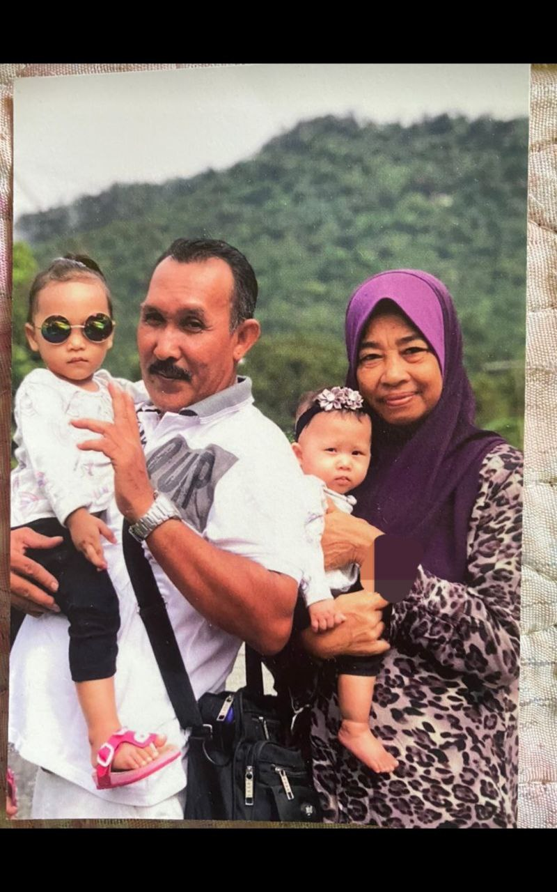
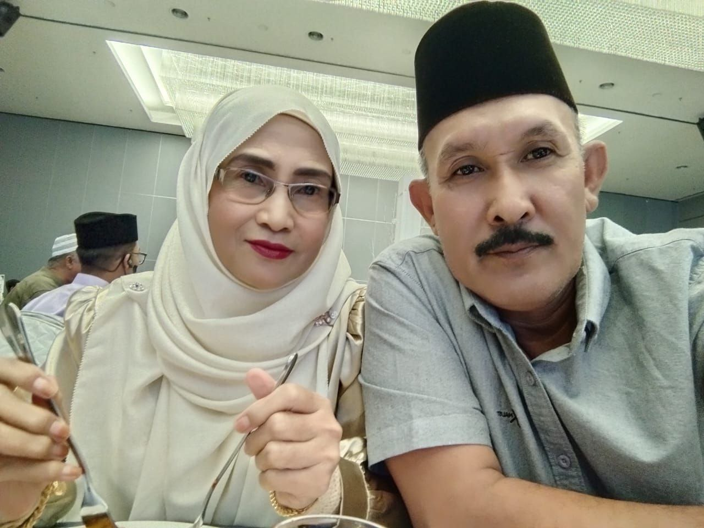
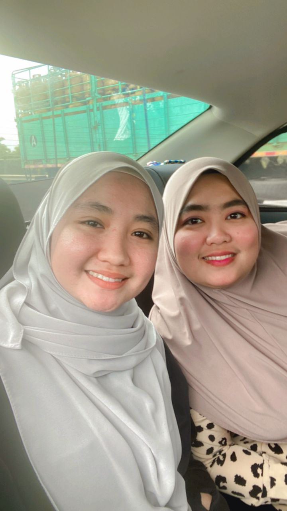
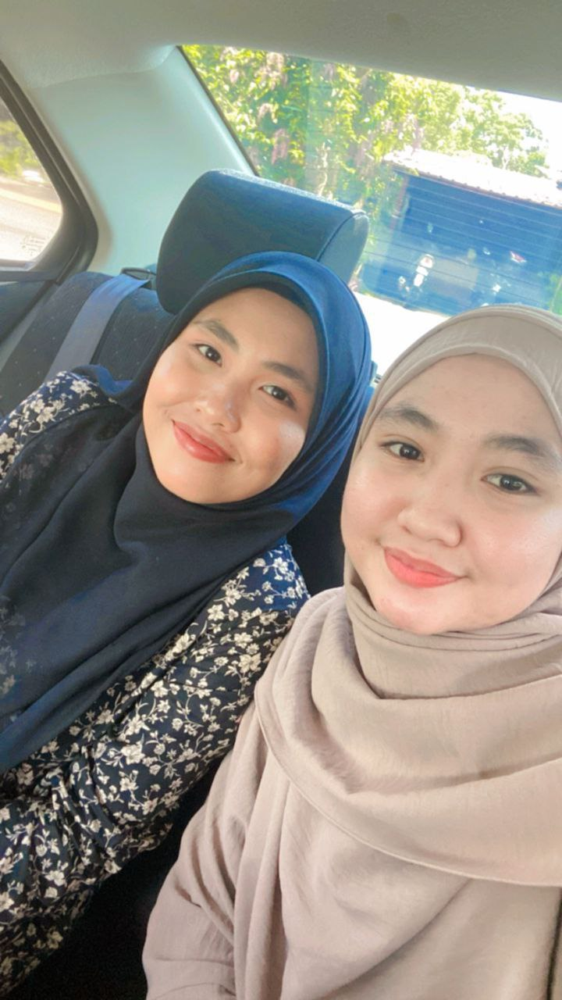

My Parents: This is my mom and dad. My dad, Mohd Safri Bin Mohd Isa, and my mom, Normah Binti Abdul Hamid, were married in 1995. They were blessed with three daughters.
Memories of Mom: On November 26, 2018, my mom passed away after battling kidney disease for five years. I miss her dearly—her cooking, her voice, and her presence in our lives.

My New Mother:My father was married to my new mother on 2022.She is the best stepmother . she loves me like her own daughter . she came from Pahang and was blessed with 5 sons.

First Sister:This is my older sister.Her name is Fitti Natrah Binti Mohd safri .She was married and blessed with one daughter.The is the most clingy sister i ever had.Sometimes it doesn't seem like i'm the youngest as my sister is more clingy than me . She is my mother since my mom left us . She was there when i needed.

Second:This is my second sister.Her name is fetty Nursahirah Binti Mohd Safri .She was married and blessed with 2 sons.She is older 5 years than me .During my late mother,she always argue with me .But since our mom left,our life totally changed.She was the person who always protect me , Care about me and many more . Im gratefull to have my sisters in my life .